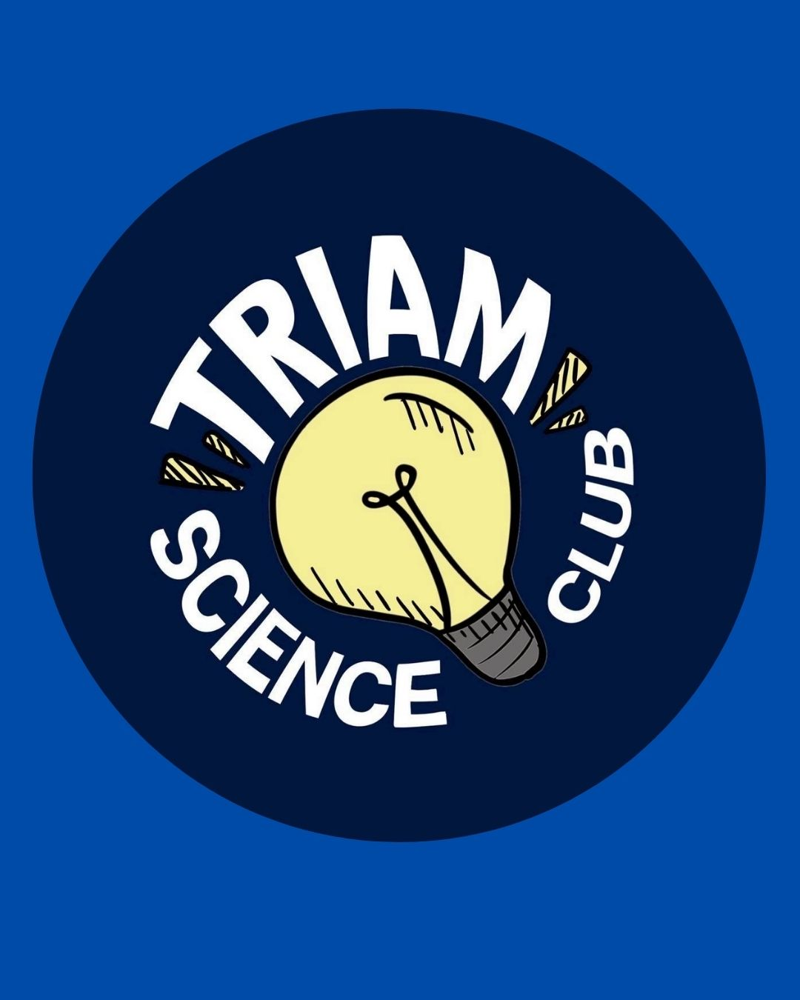
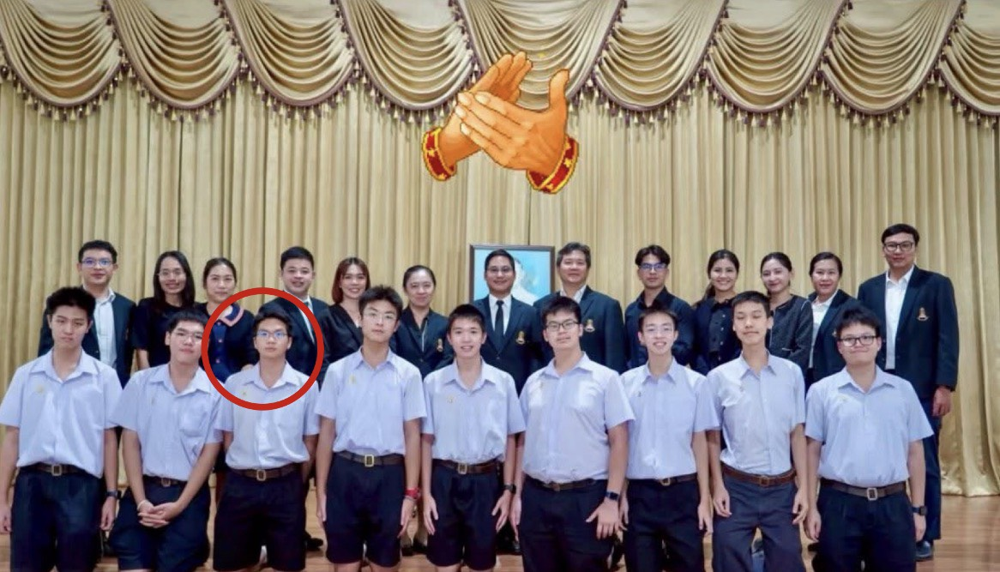
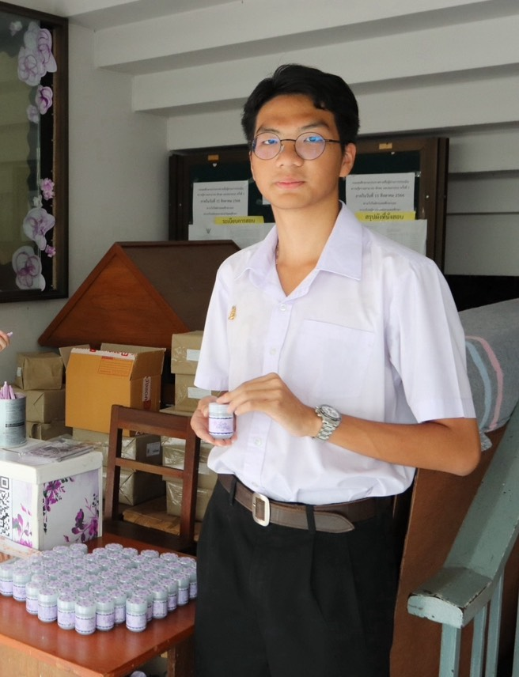
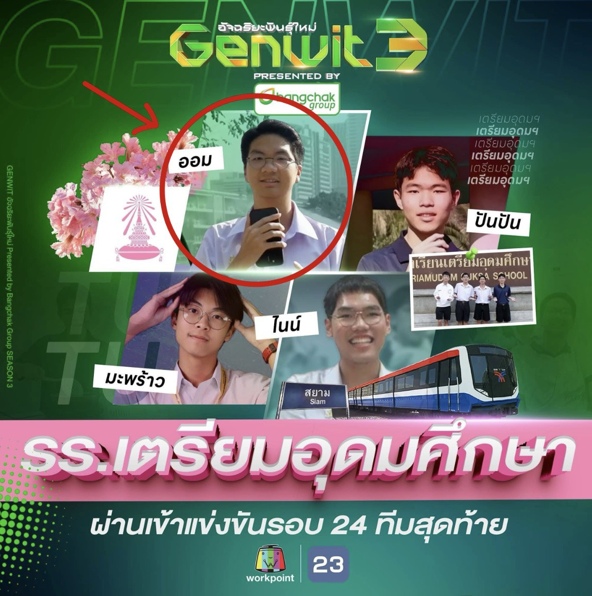
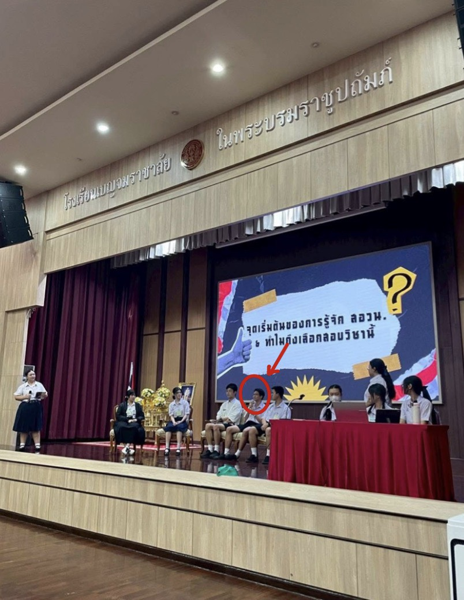
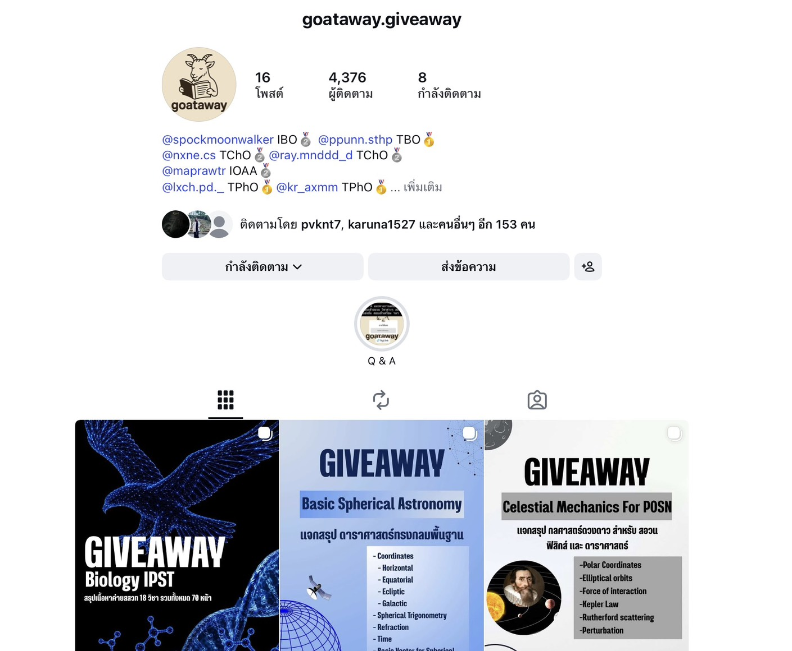

ประสบการณ์การทำงาน
ประวัติการทำงานและบทบาทที่เคยได้รับความไว้วางใจ

ประธานชมรมวิทยาศาสตร์
ประจำปีการศึกษา 2569

ประธานคณะกรรมการออกข้อสอบการแข่งขัน TUMSO สาขาฟิสิกส์

คณะกรรมการฝ่ายวิชาการตึกคุณหญิงหรั่ง กันตารัติ

ตัวแทนโรงเรียนเตรียมอุดมศึกษาไปแข่งขันรายการ GENWIT อัจฉริยะพันธุ์ใหม่ ซีซั่น 3

วิทยากรรับเชิญเพื่อให้ความรู้และแนะแนวทางการเข้าสอวน. ตามโรงเรียนต่างๆ

เจ้าของเพจเผยแพร่ความรู้ทางวิชาการ ที่มีผู้ติดตามร่วมกันกว่า 5,000 คน
นโยบายเพื่อชาวตึก 3
คิดค้น แบ่งหมวดหมู่ และพร้อมลงมือทำเพื่อตอบโจทย์จริง
🧼 ด้านสุขอนามัยและสวัสดิการตึก
🧼 ด้านสุขอนามัยและสวัสดิการตึก
ปรับปรุงสุขอนามัยและกำจัดกลิ่นห้องน้ำ
จัดการปัญหากลิ่นไม่พึงประสงค์ในห้องน้ำตึกเรียนอย่างจริงจัง และวางระบบตรวจสอบเพื่อเติมสบู่ล้างมือทันทีเมื่อหมด เพื่อสุขอนามัยที่ดีของทุกคน
เอาน้ำเปล่ากลับมาขายในตึก
อำนวยความสะดวกให้เพื่อนๆ ไม่ต้องเดินไปซื้อไกลในช่วงพักหรือเวลาเรียน
ชี้แจงกรณีขายทิชชู่/ผ้าอนามัยในตึก
จากการสอบถามประธานตึกปีที่แล้ว พบว่าไม่แนะนำให้ทำแบบถาวรเนื่องจากไม่ยั่งยืน มีปัญหาเรื่องความสะอาดและการเติมของที่ไม่ทั่วถึง แต่จะเตรียมแผนสำรองสำหรับกรณีฉุกเฉินไว้แทน
กล่อง Lost and Found
จัดตั้งกล่องหรือจุดศูนย์รวมสำหรับผู้ที่เก็บของหายได้นำมาวางไว้ เพื่อให้เจ้าของกลับมาตามหาและรับคืนได้สะดวก
🏆 ด้านกิจกรรมและกีฬาสี
🏆 ด้านกิจกรรมและกีฬาสี
แบ่งงานและกำหนดหน้าที่ช่วงกีฬาสีให้ชัดเจน
วางระบบและจัดสรรตำแหน่งงานในการเชียร์และการแข่งขันอย่างเป็นระบบ เพื่อเป้าหมายสูงสุดคือพาลูกๆ ตึก 3 เป็นผู้ชนะกีฬาสี!
อุปกรณ์กีฬาและโต๊ะปิงปอง
จัดเตรียมไม้แบด, ลูกบอล, และบาสเกตบอลมาให้ทุกคนยืมเล่น รวมถึงจะพิจารณาเพิ่มโต๊ะปิงปองอีก 1 โต๊ะตามความต้องการใช้งานจริง
💰 ด้านการสร้างรายได้และส่วนกลางตึก
💰 ด้านการสร้างรายได้และส่วนกลางตึก
จัดทำของที่ระลึกประจำตึก 3 เพื่อหารายได้
ออกแบบและจำหน่ายของที่ระลึกสุดคูล เช่น สติกเกอร์ พวงกุญแจ และกระติกน้ำ ลายตึก 3 เพื่อนำรายได้ทั้งหมดเข้าส่วนกลางสำหรับใช้พัฒนากิจกรรมและสิ่งอำนวยความสะดวกภายในตึก
📚 ด้านวิชาการและข้อมูลข่าวสาร
📚 ด้านวิชาการและข้อมูลข่าวสาร
Google Drive รวมมิตร DEK70 และอื่นๆ
รวบรวมข้อสอบเก่า เฉลย Mocktest สรุปเนื้อหา ทั้งที่ใช้สำหรับเข้ามหาวิทยาลัยและใช้สอบภายในโรงเรียน
OpenChat แจ้งข่าวสารในตึก
สรุปประกาศจากเสียงตามสาย (Intercom) และสรุปข่าวสารสำคัญต่างๆ ของโรงเรียนให้ไม่พลาดทุกการอัปเดต
OpenChat ข่าวสารการสอบเข้า
เน้นแบ่งปันกำหนดการ ระบบ และข้อมูลสำคัญเกี่ยวกับการเตรียมตัวสอบเข้ามหาวิทยาลัยโดยเฉพาะ
💻 ด้านเทคโนโลยีและการใช้ชีวิต
💻 ด้านเทคโนโลยีและการใช้ชีวิต
เว็บเช็คจำนวนชั่วโมงที่เหลือในการเรียนเพื่อกัน มส.
ระบบจะเริ่มใช้งานในเทอม 2 ซึ่งเป็นช่วงที่สถิติการขาดเรียนของเพื่อนๆ สูงที่สุด เพื่อป้องกันไม่ให้เกิดปัญหาหมดสิทธิ์สอบ